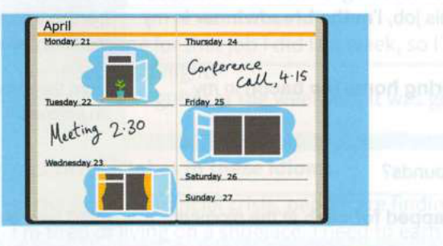
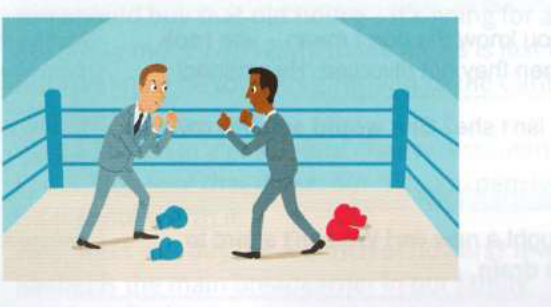
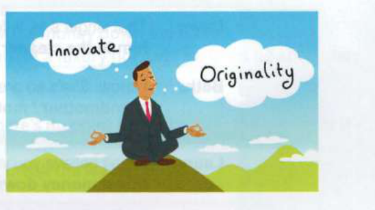

Bài tập
31.1
Đọc các ý kiến sau và trả lời câu hỏi.
1
When do you next have a window, Sandra? (Khi nào bạn mới có thời gian rảnh [have a window] tiếp theo vậy, Sandra?)
What does the speaker want to find out? (Người nói muốn tìm hiểu điều gì?)
2
We'll need to touch base soon. (Chúng ta sẽ cần sớm liên lạc với nhau [touch base].)
What is the speaker suggesting? (Người nói đang gợi ý điều gì?)
3
Things are rather difficult at this moment in time. (Mọi thứ khá là khó khăn vào thời điểm hiện tại [at this moment in time].)
Why would some people not like this expression? (Tại sao một số người có thể không thích cách diễn đạt này?)
4
We should have a meeting on a weekly basis. (Chúng ta nên tổ chức họp trên cơ sở hàng tuần [on a weekly basis].)
Does this sentence mean exactly the same as 'We should have a meeting every week'? (Câu này có mang ý nghĩa hoàn toàn giống với 'We should have a meeting every week' [Chúng ta nên họp mỗi tuần] không?)
31.2
Những bức tranh này gợi cho bạn nghĩ đến những thành ngữ nào?
1

3
2

4

31.3
Hoàn thành mỗi thành ngữ.
1
I don't know what to advise. The only solution is to ................................................... it and see. (Tôi không biết phải khuyên điều gì. Giải pháp duy nhất là [suck it and see - thử rồi mới biết] xem sao.)
2
The ................................................... of the matter is that the company is now in a very difficult position. (Thực tế [fact] của vấn đề là công ty hiện đang ở trong một tình thế rất khó khăn.)
3
We've tried all the obvious solutions. Now we'll have to try thinking outside the ................................................... . (Chúng ta đã thử tất cả các giải pháp rõ ràng rồi. Bây giờ chúng ta sẽ phải thử suy nghĩ vượt ra ngoài khuôn khổ [box].)
4
The two managers have become serious rivals, and the gloves are ................................... . (Hai người quản lý đã trở thành đối thủ thực sự của nhau, và họ không còn kiêng nể nhau nữa [off].)
5
In the business world, it's a matter of dog eat ................................................... . (Trong thế giới kinh doanh, đó là chuyện cạnh tranh khốc liệt [dog] một mất một còn.)
6
There is a need for more joined-................................................... thinking from our managers. (Cần có thêm sự tư duy nhất quán/liên kết [up] từ các nhà quản lý của chúng ta.)
7
It's a very difficult situation. We're between a ................................................... and a hard place. (Đó là một tình huống rất khó khăn. Chúng ta đang ở thế tiến thoái lưỡng nan [rock].)
8
Some of his ideas are very innovative. They really push the ................................................... . (Một số ý tưởng của anh ấy rất sáng tạo. Chúng thực sự vượt qua giới hạn [envelope].)
31.4
Thay thế phần được gạch chân trong mỗi câu bằng một thành ngữ.
1
Do you have any points that you would like us to discuss today? (Bạn có bất kỳ vấn đề nào muốn chúng ta đưa ra bàn luận hôm nay không? [→ bring to the table])
2
We need to prove that our products are the most up-to-date if we are to stay competitive. (Chúng ta cần chứng minh rằng các sản phẩm của mình là tiên tiến nhất nếu muốn giữ vững khả năng cạnh tranh. [→ at the cutting edge])
3
They've been working all hours of the day and night to complete the project. (Họ đã làm việc suốt ngày đêm để hoàn thành dự án. [→ 24/7])
4
The truth is that our previous advertising campaign was not as successful as we had hoped. (Sự thật là chiến dịch quảng cáo trước đây của chúng ta đã không thành công như mong đợi. [→ The fact of the matter])
5
I have some time when we could meet on Thursday afternoon if that suits you. (Tôi có khoảng thời gian rảnh có thể gặp mặt vào chiều thứ Năm nếu điều đó thuận tiện cho bạn. [→ a window])
6
They chose Mark for the job because he had everything they were looking for. (Họ chọn Mark cho công việc này vì anh ấy đáp ứng mọi yêu cầu họ đang tìm kiếm. [→ ticks all the boxes])